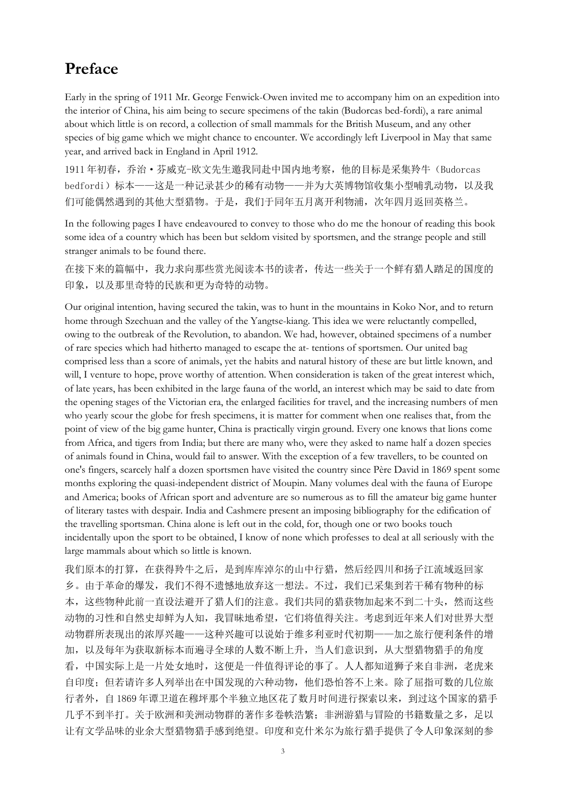
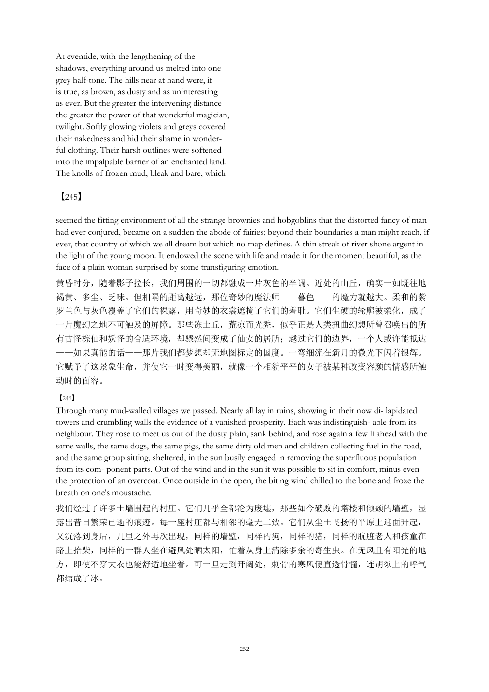
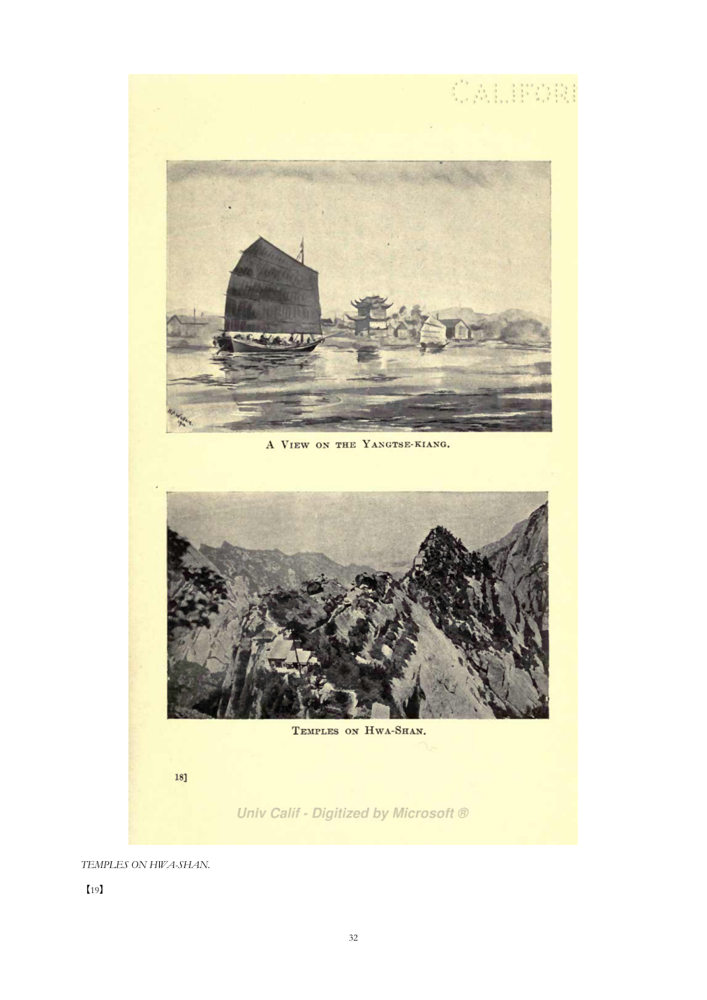

Translate and reconstruct scholarly PDFs with the providers, models, and budget you choose.

Restore cross-page meaning first. Translate with context. Keep the original edition citable.

原文跨页内容先作为完整语义单元翻译，再把页码标记放回真实边界。
Readable across pages. Verifiable across editions.
Preserve meaningful pages, plates, maps, captions, notes, and page references—then improve it together in the open.
